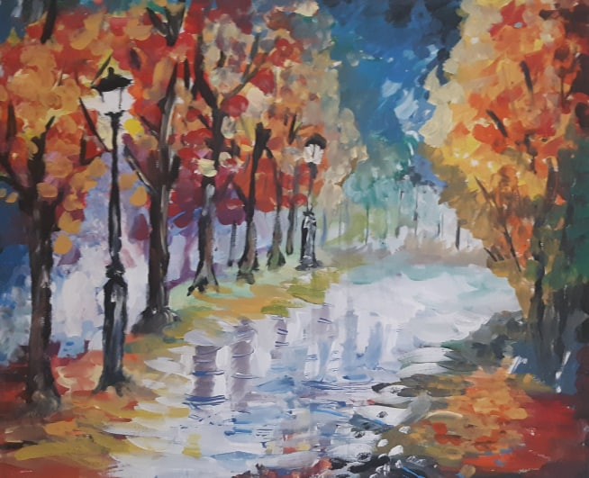
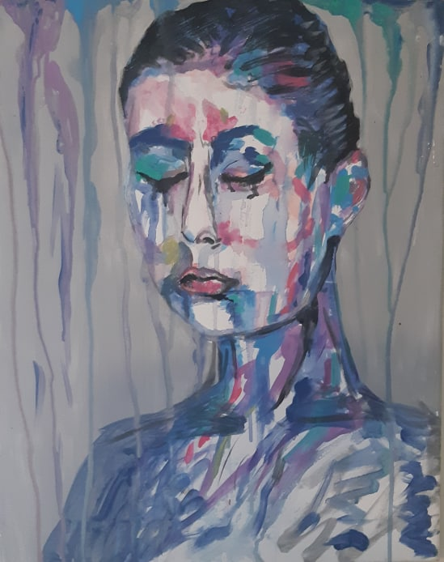
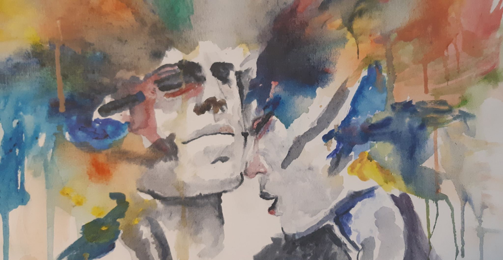
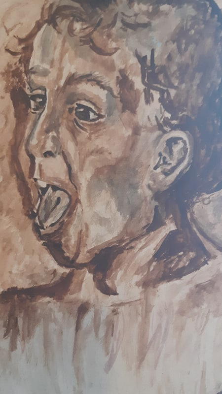
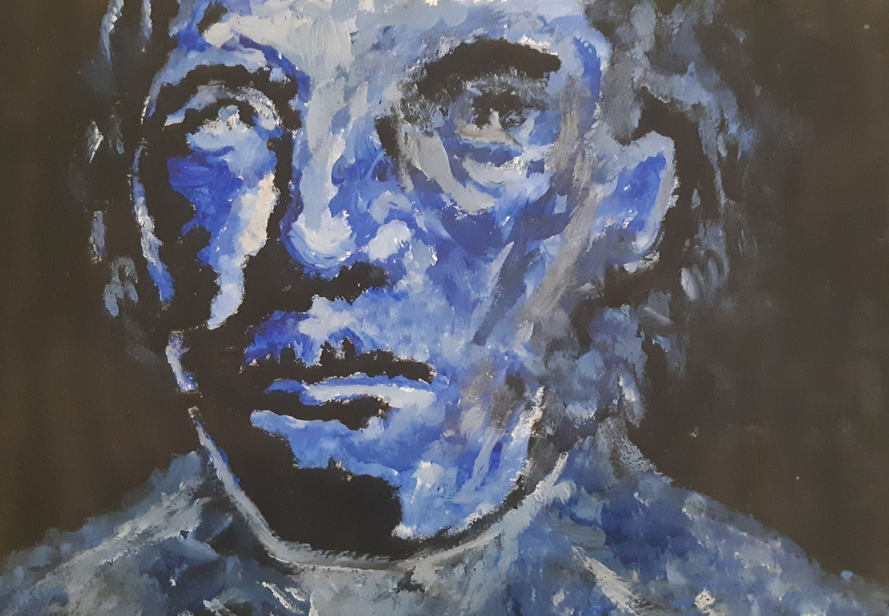

Title: RAINY CITY
Done with Acrylics and watercolors, one of my first paintings on my own stretched canvas, trying to make a city street look wet from the rain, took 5hrs.

Title: MOUNTAINS
First painting on a life-size canvas, used acrylics as my main paint and a couple oils for the water, creating a mountain scene with a sunrise, took 4hrs.

Title: SADNESS
Abstract person, watercolor, used to run the paint down the canvas and run over th painted person, conveying how sadness might be visualized as beautiful.

Title: BEAUTIFUL MINDS
A visual representation of what creativity in a brain might look like, creativity can't be held back, exploding out, especially when there are multiple minds collaberating, Acrylic

Title: TODDLER
First monotone person done a bit more realistically, trying to master facial expressions through mixed media, acrylic paint, charcoal, and pencil crayon.

Title: LIGHTING
Working on shadows and light, where they might hit a person's face, mixed media: charcoal, acrylic paint, pencil.
